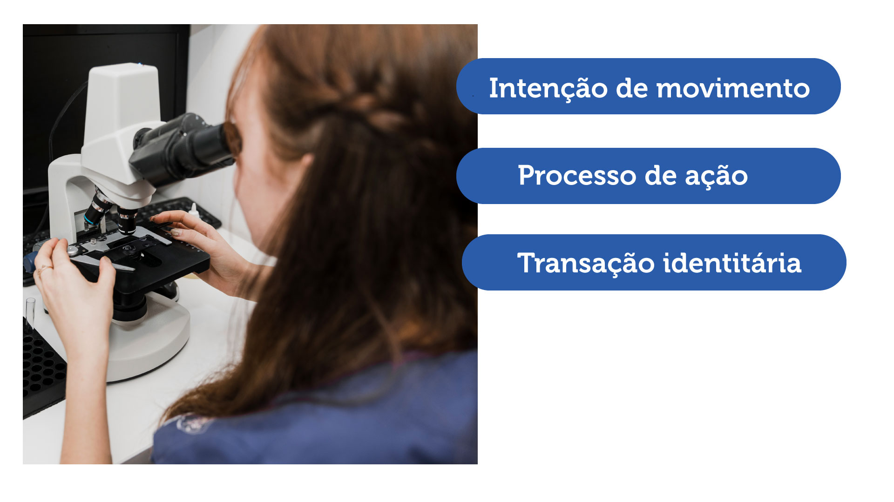

Quando a profissionalização se refere à formação, é importante sair do referencial epistemológico da pedagogia orientada exclusivamente por “conteúdos”, comum na cultura escolar, e entender o processo de profissionalização como resultado de uma interação (com ênfase tanto no “inter” quanto na “ação”, ou seja, em que o sujeito possa se ver agindo, não apenas decorando, ouvindo ou assistindo). Vamos entender melhor esse processo.
Este processo pode ser compreendido sob três dimensões simultâneas:

-
Trata-se da busca, por parte da instituição formadora (leia-se: escola ou empresa), de “movimentar” os sujeitos “nos sistemas de trabalho por meio de propostas de dispositivos de formação específicos”.
Close -
Também chamado de action process, refere-se ao modo como um sujeito age em uma situação, levando os atores envolvidos a conferir profissionalidade ao aprendiz, dependendo da forma como é percebida pelo ambiente e estes atores. Este action process “é geralmente acompanhado de uma demanda de reconhecimento profissional dos sujeitos pela organização” (Wittorski, 2008, p. 32.
Close -
Ao longo do processo de ação, ocorre uma “transação identitária”, ou seja, uma série de trocas de diferentes naturezas que afetam o indivíduo e o ambiente: trocas de gestos, palavras, saberes, valores, etc. Esta transação é que pode e deve levar à profissionalização.
Close
Figura 01 - Fonte: (Freepick) Imagem editada pela equipe gráfica do projeto.
Realização:
Secretaria de Educação Profissional e Tecnológica
Produção: